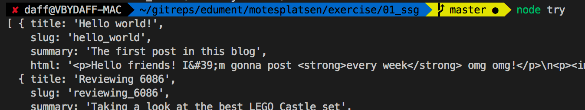
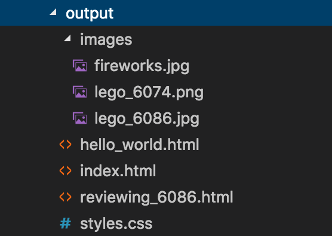

Node, npm and Express
The three musketeersSections in this chapter
NodeJS
It's JavaScript, Jim, but not as we know it
Node (or Node.js) is a JavaScript runtime. It can do two things:
- REPL (type
nodein terminal) - Execute file (type
node path/to/file)
Node runs off of the v8 runtime, which also powers the Chrome family of browsers.
When Node was first released, its biggest innovation was its asynchronous API:
Almost any API function you called returned immediately and then did its work asynchronously.
Over the past decade, three major ways to work with asynchronous operations have evolved, each better than the one before:
- Callback functions (used by Node's API)
- Promises (new API in ES2015)
async/await(new syntax in ES2017)
In node, each file is a module. We can import...
- exports from other files in our source
- build in Node modules (
fs,path, ...) - third party code from npm
Here's the (almost) full resolution logic:
Just like the browser adds a bunch of stuff on top of JS...
document.someDOMrelatedMethod...
...so does Node!
You'll find the documentation for these here...
...and some more readable guides here:
What ECMASCript version runs in Node?
Excellent question! It of course depends, but:
npm
It literally stands for "npm"!
Bundled with node is the Node Package Manager, or npm for
short. npm can be used to:
- Initialize projects
- Install dependencies
- Run scripts
As of this writing, npm hosts over 800,000 modules.
Let's build a project
The problem domain
To have something concrete to work with, we'll pick a web application to build.
We'll build a site that lists various offers and lets you buy one or more of them:

We won't dive into the details right now, but let's initialize a new project:
$ mkdir node-app && cd node-app
$ npm init
# ... Fill everything out
What just happened?
Turns out we now have a package.json in our folder, with the following content:
{
"name": "BuyStuff",
"version": "1.0.0",
"description": "Project description",
"main": "index.js",
"dependencies": {},
"devDependencies": {},
"scripts": {
"test": "echo \"We have no tests yet\""
},
"author": "David Waller",
"license": "ISC"
}
We'll also need dependencies. While we COULD download them, put them
somewhere and require them, we're going to install it automatically
instead.
Let's install the express framework (which we'll deep-dive into today)
$ npm install express
Now express is added to our dependency list in package.json!
{
"dependencies": {
"express": "^4.15.3"
},
"devDependencies": {},
"scripts": {
"test": "echo \"We have no tests yet\""
}
}(in older versions of npm we had to install with a --save flag for this to happen)
Where are the downloaded dependencies stored?
In a folder called node_modules. You'll want to ignore this one in
your CVS, but keep package.json committed.
There's also the concept of dev dependencies, used during development only.
For instance, we'll use babel in the upcoming module to compile our
code. Babel is not needed in deployment:
$ npm install --save-dev babel-cli
These are stored in the same folder as regular dependencies.
{
"dependencies": {
"express": "^4.15.3"
},
"devDependencies": {
"babel-cli": "^6.24.1"
},
"scripts": {
"test": "echo \"We have no tests yet\""
}
}In a production environment, you'd most likely want to run the following:
$ npm install --production
This grabs all regular dependencies (but not the dev ones) and downloads them.
sidenote - semantic versioning
npm uses Semantic versioning (also called semver)
A "version" is described as a string, such as 1.2.3, where:
1 - MAJOR (incompatible API changes)
2 - MINOR (new functionality, backwards compatible)
3 - PATCH (patches and bugfixes)
In your package.json (and also when installing, you can specify a
semver, together with one of several comparators. A few common examples
include:
>=1.2.3 # Anything greater than or equal to this version
=1.2.3 # Exactly this version
^1.2.3 # Keep on the same major version
# (1.3.0 OK, but not 2.0.0)
~1.2.3 # Keep on the same minor version
# (1.2.4 OK, but not 1.3.0)
There's a giant heap of these. Check the following URL for the spec:
Adding a script
Runnable scripts can be added as a json property in package.json
{
"dependencies": {},
"devDependencies": {},
"scripts": {
"printme": "echo \"This is a meaningless script\""
}
}
Running scripts
npm uses a command called run:
npm run printme
This just runs our pointless command that we defined in printme
Let's make a more useful example
Adding a test script to package.json instead:
{
"dependencies": {},
"devDependencies": {
"mocha": "^3.1.2",
"babel-cli": "^6.18.0",
"babel-preset-es2015": "^6.18.0",
},
"scripts": {
"test": "mocha --compilers js:babel-core/register"
}
}This script will by convenience look for a folder named test and run all the test files.
Running the test script
npm run test
or
npm test
The later is a shortcut provided by npm. You can name a script to
whatever you want but this shortcut only works for test and start.
File juggling
3 useful 3rd party modules
Let's make three new friends!
- aMore file methods with fs-extra
- bMarkdown support with marked
- cYAML file metadata with front-matter
First, fs-extra! It is...
- a drop-in replacement for
fs - with some extra features added
So instead of doing...
const fs = require("fs");
...you'd do this...
const fs = require("fs-extra");
...and now you can do this!
fs.removeSync(pathTodirOrFile); // example of added method
Markdown is a popular shorthand format for writing HTML.
For example, this...
## Lego set 6086
The [6086 castle](https://brickset.com/sets/6086-1) is ** totally awesome**!
...is equivalent to this:
<h2>Lego set 6086</h2>
<p>
The <a href="https://brickset.com/sets/6086-1">6086 castle</a> is
<strong>totally awesome</strong>!
</p>

We can use Marked as a command-line tool...
marked -i source.md -o dest.html
...or from node:
const fs = require('fs-extra');
const mdParser = require('marked').setOptions(...);
const input = fs.readFileSync('./source.md').toString();
const markdown = mdParser(input);
fs.writeFile('./dest.html', markdown);
Finally, front-matter!
So. When dealing with content files, it is common to want to associate metadata.
For example, in a blog post file, we might want to list...
- author id
- post slug (html path)
- associated tags
...etc.
Using YAML syntax, this might look like this:
---
authorId: david
title: "Using Firebase in React"
tags: JS, Firebase, React
summary: "Showing off Firebase in a React app"
---
# How to use Firebase in React
Hello! Today we'll take a look at how to bla bla
...etc etc, full post content follows here
When dealing with such files, we need a method that separates the YAML data from the body:
...and this, of course, is exactly what the front-matter module lets us do:
const fs = require("fs-extra");
const rawPostFile = fs.readFileSync("./post.md").toString();
const fm = require("front-matter");
const blogPost = fm(rawPostFile);
const content = blogPost.body; // everything below the YAML
const attributes = blogPost.attributes; // obj with all medata
Of course, together with marked, a natural next step would be to process the body:
const html = mdParser(blogPost.body);
Exercise - SSG part A
Who needs a DB anyway?
A hot trend today is to replace DB-driven sites by static site generators.
Every time a new source file is added, we regenerate the site!
There are many steps to the generating:
So many, that we start with just the reader:

Here's the plan:
- aSet up project
- bSet up static resources
- cCreate post source files
- dCreate data reader
It is quite a long journey, but for this one you'll get detailed instructions.
Try to take one step at a time!
First we set up the project!
- create a new folder called
ssg - navigate to it in a terminal
- execute
npm initand go through the questions - add our dependencies:
npm install --save-dev front-matter marked fs-extra
Now for our static resources!
/static
styles.css
/images
nicepic.png
anotherpic.jpg
For now just add in an empty style sheet and some images that you want to include in your blog posts.
Now create a directory /posts with two or three markdown files.
/posts
my_first_post.md
another_post.md
a_third_post.md
These are our post source files, that we eventually want to turn to HTML.
Each post file should have YAML frontmatter containing...
- slug (will be the URL)
- title
- summary
...and a markdown body.
Something like this:
---
slug: hello_dear_world
title: My first post
summary: "The inaugural hello world post!"
---
Greetings **world**! My name yada blah ...
If you want to reference an image in a post, the markdown shorthand is:

In other words, use a relative path as if you were inside the static folder.
Add a folder generate with a getData.js file:
/generate
getData.js
This file will house logic for reading the post source files.
It should export a single method that returns the data:
// inside of /generate/getData.js
module.exports = function() {
// Loop through all files inside "../posts",
// and return an array of objects, one per
// post. These objects should contain
// processed YAML and markdown.
return posts;
};
The exact shape of the post objects is up to you!
You will need to use the file API...
const fs = require("fs"); // build in file methods
...to find all file names in a folder...
fs.readdirSync(sourcePath); // array of file names
...and read a single file:
fs.readFileSync(filePath).toString();
How do we test the getData function? One way:
- Create a
try.jsfile in the root - Inside that file, add
const getData = require("./generate/getData"); const posts = getData(); console.log("Parsed posts", posts); - Execute
node tryin the terminal
Once you see the correct data logged out, you're done!

Exercise - SSG part B
Almost there!
Time for step B!

In other words, we need to
- aMake templates
- bMake a page getter
- cMake a writer
First, some templating functionality! We want to make blog pages and also a list to use as index:
So we'll need two different templates.
Make that three, since we also want a master template!
We'll implement them using ES2015 template literals - see the "misc" section in the ES2015 Appendix if they're not familiar!
Add a /templates dir inside /generate, containing three files:
/generate
/templates
master.js
post.js
list.js
The master.js should be something like this:
module.exports = function(title, content) {
return `
<!DOCTYPE html>
<html lang="en">
<head>
...
</head>
<body>
...
</body>
</html>`;
};
The <head> part should set the title and reference the stylesheet:
<meta charset="UTF-8">
<title>${title}</title>
<link rel="stylesheet" href="styles.css">
And in the <body> we simply show the content:
<div>
<h1>My awesome blog</h1>
<hr/>
<h2>${title}</h2>
<main>${content}</main>
</div>
The post.js file should template the page for a single post:
const master = require("./master");
module.exports = function(post) {
return master(post.title, post.html);
};
It will simply pass the processed markdown content to the master template.
In list.js we template the front page listing all posts:
const master = require("./master");
module.exports = function(posts) {
let listOfPosts = ...; // build a <ul> with a <li> per post
return master("My awesome blog", listOfPosts);
}
Each <li> should be something like this:
let htmlForPost = `
<li>
<a href="${post.slug}.html>
${post.title}
</a>
<p>${post.summary}</p>
</li>
`;
To test your templates, simply edit try.js:
const getData = require("./generate/getData");
const posts = getData(); // <--- that we make in part A
const list = require("./generate/templates/list");
const post = require("./generate/templates/post");
console.log("A templated post", post(posts[0]));
console.log("The index", list(posts));
Now we need to make the getPages function!
/generate
getPages.js
It should use getData and the templates to return an array of page definitions like this:
[
["index", "<ul><li>..."],
["hello_world", "<p>So this is my first post! ..."],
["review_6086", "<p>In this post I review 6086 ..."],
...
]
In other words, each page definition is [slug,processedMarkdown].
To test it, edit try.js again:
const getPages = require("./generate/getPages");
const pageDefinitions = getPages();
console.log("Page definitions", pageDefinitions);
Finally, time to add a writer file that actually does some work!
/generate
index.js
This file will generate the blog into /output!
It needs to:
- remove previous
/output - copy
/staticto/output - write an html file per entry in
getPages()
Finally, we're done!
You can now remove try.js, and instead test the command by doing
node generate
(this will execute ./generate/index.js)
...and an output folder with static files and html files should appear!

However, it is customary to add "app-level commands" such as the writer file to npm scripts, so let's do that!
In package.json:
{
// other stuff truncated
"scripts": {
"generate": "node generate"
}
}
Now the user can create the site by typing
npm run generate
To see the generated site in a browser, either..
- double-click a .html-file to open it over the
file:///protocol - ...or serve the
/outputfolder to localhost via a web server
(for the latter, try the Live Server extension to VSC)
Express
Of the expressionist school
Express allows us to work with routes as well as static content. In this first module, we'll start by looking at serving static content, and then move onto setting up a router.
We have a simple front-end, that we currently serve as static files from Express - let's take a look at the source.
Our server can be started with npm start, and the application can
be reached on localhost:8080
First of all, we're initiating the application as such:
import express from 'express';
let app = express();
The imported express module returns a function that you can call,
which returns a new Express.js application.
In this case, we set up a static route, using:
import express from 'express';
let app = express();
app.use(express.static('frontend'));
app.listen(8080, function () {
console.log('Listening on port 8080')
});
Static files are mapped as a route. In fact, the following:
app.use(express.static('frontend'));
... Is short for:
app.use('/', express.static('frontend'));
Another common pattern is to map static files under a certain route. This also means that you can map several routes for different folders:
app.use('/static/images', express.static('frontend/images'));
app.use('/static/docs', express.static('lib/docs'));
Or more commonly (and safer), using the absolute path:
app.use('/static/images', path.join(__dirname, 'frontend', 'images'));
app.use('/static/docs', path.join(__dirname, 'lib', 'docs'));
Static routes are great for static content - but what about dynamic pages?
Routes are at the heart of an Express application, and we can set up more than just static ones.
In this course, we'll start by looking at some simple templating using Handlebars.
Handlebars is an extension to the Mustache templating language. It lets you write nifty templates such as:
<h1>{{title}}</h1>
<div>{{description}}</div>
In order to install Handlebars:
$ npm install --save handlebars
Before we start using Handlebars, let's setup a new Express route. A
typical HTTP GET route looks like this:
app.get('/my-route', (req, res) => {
// ...
});
The name of the function (get) is the HTTP verb. Similarly, there are
functions for POST, PUT, DELETE and so on.
The first parameter is the route mapping, and the second parameter is the handler:
app.get('/my-route', (req, res) => {
// ...
});
The handler has parameters for request and response.
In order to actually return something, we can call send:
app.get('/my-route', (req, res) => {
res.send('Hello world');
});
We can easily switch this to return a compiled template using Handlebars instead:
import handlebars from 'handlebars';
// ...
app.get('/my-route', (req, res) => {
// Compile a template from a string:
let template = handlebars.compile("<h1>{{greeting}}</h1>");
// Link the template to a context and send it back:
res.send(template({greeting: "HELLO WORLD"}));
});
While our last example did in fact work, we'd like to read our templates from files, rather than using hard-coded strings.
What we'll do in this module is:
- Write a new module to allow for simple parsing from files
- Setup routes for a couple of templates for a frontend and link them with some data
Let's start by building a simple get route again:
app.get('/', (req, res) => {
// ...
});
Let's assume that we have a module that allows us to compile and link Handlebars templates, like this:
import templates from './templates';
// ...
app.get('/', (req, res) => {
templates.link('src/templates/index.hbt', {
some: 'value'
}, (err, data) => {
if (err) {
res.status(500).send(err);
}
res.send(data);
});
});
Note that this needs to be asynchronous since we'd be blocking on file reads otherwise!
In this module, we'll stub the link call in the following way:
// templates.js
export default {
link: function (template, context, callback) {
fs.readFile(template, 'utf-8', (err, data) => {
// File is HOPEFULLY read here
});
}
};
Remember, the Node.js convention is based on callbacks:
export default {
link: function (template, context, callback) {
fs.readFile(template, 'utf-8', (err, data) => {
if (err) {
/* Something went wrong */
} else {
/* We're good */
}
});
}
};
Handling potential errors and invoking the callback gives us:
export default {
link: function (template, context, callback) {
fs.readFile(template, 'utf-8', (err, data) => {
if (err) {
callback(err, undefined)
} else {
try {
let compiled = handlebars.compile(data);
callback(undefined, compiled(context));
} catch (e) {
callback(e, undefined);
}
}
});
}
};
We should be able to use our module, and link some static data:
app.get('/', (req, res) => {
templates.link('src/templates/index.hbt', {
items: [
{
image: "http://lorempixel.com/400/200/",
title: "Drink whisky with friends",
tags: ["whisky", "friends", "drink"]
},
{
image: "http://lorempixel.com/400/203/",
title: "Visit giraffes in the park",
tags: ["giraffes", "park", "animals"]
}
]
}, (err, data) => { /* Abbreviated */ });
});
What about the index.hbt file?
The interesting template pieces:
{{#each items}}
<div class="col-sm-6 col-md-4">
<div class="thumbnail item">
<a href="#"><img src="{{this.image}}" width="400"
height="200" alt="..."></a>
<div class="caption">
<span><a href="#">{{this.title}}</a></span>
</div>
</div>
</div>
{{/each}}This works, but we don't exactly have a clean interface between application data and logic right now.
In order to make some logical separation of concerns, we'll move the static data into a module
We'll hook this up to a real database later in the course
We know that database access is going to be asynchronous, so we'll keep this in mind for the new module:
// store.js
export default class Store {
allOffers(callback) {
callback(undefined, [
{
image: "http://lorempixel.com/400/200/",
title: "Drink whisky with friends",
tags: ["whisky", "friends", "drink"]
},
// ... More static data here
])
}
}
Using it is easy (albeit a bit ugly):
import Store from './store';
app.get('/', (req, res) => {
let s = new Store();
s.allOffers((err, items) => {
if (err) { res.status(500).send(err); }
template.link('src/templates/index.hbt', { items },
(err, data) => {
if (err) {
res.status(500).send(err);
}
res.send(data);
});
});
});
The problem with asynchronous code structures in Node.js is already becoming apparent.
Exercise - server
Express delivery!
Let's serve our generated site from an Express backend!
(this won't give us any advantages, we do it just to try out express)
(And don't worry - this is nowhere near as complex as the last exercise)
(in fact, nothing else will be)
Add a folder /server and a file index.js:
/server
index.js
In that file we need to create an express app that...
- ahas a route per page definition
- bserves the files in
static... - cis available on a localhost port
Remember how you mumbled to your friend that the last exercise was split into too many steps?

Well, we can now repurpose the getPages function!

In other words we'll be using the pages definitions again...
const getPages = require("../generate/getPages");
const pages = getPages();
...and for each of them we must set a route:
app.get("/" + fileName, (req, res) => res.send(fileContent));
(you'll also want to set an additional route for /, serving the same thing as /index.html)
Regarding serving the /static files - snoop at the previous section on how to use express.static!
Finally, make your server .listen to a port of your choosing!
You should also log out a message in the console with the port number
Now you can try your server by doing...
node server
...which runs /server/index.js!
But, just like with generate, you should also set up an npm script to start the server!